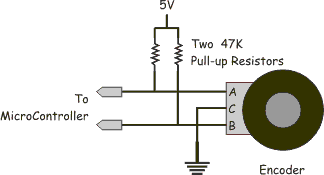

<script type="text/javascript">
	RED.nodes.registerType('quadrature-encoder', {
		category: 'snappy',
		color: '#dddddd',
		defaults: {
			name: {
				value: ""
			},
			board: {
				type: "nodebot",
				required: true
			},
			pinA: {
				required: true
			},
			pinB: {
				required: true
			},
			buttonPin: {},
			outputType: {},
			ppr: {
				value: 60,
				required: true,
				validate: RED.validators.number()
			},
			diameter: {
				value: 0.15,
				required: true,
				validate: RED.validators.number()
			},
		},
		inputs: 0,
		outputs: 1,
		icon: "quadrature_encoder.png",
		label: function() {
			var node = this
			return this.name || "Quadrature Encoder";
		},
		oneditprepare: function() {
			$('#node-input-outputType').change(function() {
				$('.types').hide()
				$('.' + this.value).show()
				$('.' + this.value).find('input').each(function() {
					if ($(this).val() === "undefined") {
						$(this).val('')
					}
				})
			})

			if (!this.outputType) {
				this.outputType = 'typeA'
			}

			$('#node-input-outputType').val(this.outputType).change()
		},
		oneditsave: function() {
			var node = this
			var type = $('#node-input-outputType').val()

			$('.types').each(function(e) {
				if ($(this).hasClass(type)) {
					return; //Dont do anything for currently selected type
				}
				$(this).find('input').each(function() {
					$(this).val("undefined")
				})
			})
		}
	});
</script>

<script type="text/x-red" data-template-name="quadrature-encoder">
	<div class="form-row">
		<label for="node-input-board">
			<i class="fa fa-tasks"></i> Board
		</label>
		<input type="text" id="node-input-board">
	</div>

	<div class="form-row">
		<label for="node-input-name">
			<i class="fa fa-tag"></i> Name
		</label>
		<input type="text" id="node-input-name" placeholder="Quadrature Encoder label">
	</div>
	<hr>

	<div class="form-row">
		<label for="node-input-pinA">
			<i class="fa fa-map-pin"></i> pin A
		</label>
		<input type="text" id="node-input-pinA" placeholder="13">
	</div>

	<div class="form-row">
		<label for="node-input-pinB">
			<i class="fa fa-map-pin"></i> pin B
		</label>
		<input type="text" id="node-input-pinB" placeholder="12">
	</div>

	<div class="form-row">
		<label for="node-input-buttonPin">
			<i class="fa fa-map-pin"></i> Button pin
		</label>
		<input type="text" id="node-input-buttonPin" placeholder="3">
	</div>

	<div class="form-row">
		<label for="node-input-outputType">
			Output Type
		</label>
		<select id="node-input-outputType">
			<option value="typeA">Count</option>
			<option value="typeB">Travel in meters</option>
		</select>
	</div>

	<br>
	<div class='typeA types'>
		If button pin is specified, output will be in the form:
		<pre id="msg_format">{
  <span class="key">"count":</span> <span class="number">0</span>,
  <span class="key">"button":</span> <span class="boolean">false</span>
}</pre>
		<br>
		<br> If button is not specified then output would be
		<b>count</b>
		<br>i.e.
		<code>msg.payload</code> is count of encoder
		<br>
		<br>
	</div>
	<div class='typeB types'>
		<div class="form-row">
			<label for="node-input-ppr">
				PPR
			</label>
			<input type="text" id="node-input-ppr" placeholder="3">
			<br>
			<br>
			<div class="form-tips">
				<b>Points Per Revolution</b> is the number of points the encoder gives for one revolution
			</div>
		</div>
		<div class="form-row">
			<label for="node-input-diameter">
				Wheel diameter
			</label>
			<input type="text" id="node-input-diameter" placeholder="0.15">
			<br>
			<br>
			<div class="form-tips">
				In
				<strong>meters</strong> (or your custom units if output is custom implemented)
			</div>
		</div>
		<pre id="msg_format">{
  <span class="key">"travel":</span> <span class="number">0.0</span>,
  <span class="key">"count":</span> <span class="number">0</span>,
  <span class="key">"button":</span> <span class="boolean">false</span>
}</pre>
		<br>
		<strong>travel</strong> is in meters(in custom units if wheel diameter was specified in custom units)
		<br>
	</div>
	<style>
		.key {
			// color: #CC0000;
		}

		.string {
			color: #007777;
		}

		.number {
			color: #AA00AA;
		}

		.boolean {
			color: #0000FF;
		}

		.null {
			color: #0000FF;
			font-weight: bold;
		}
	</style>
</script>

<script type="text/x-red" data-help-name="quadrature-encoder">
	<p>A node which reads a quadrature encoder</p>

	<dl class="message-properties">
		<dt>config:
		</dt>
		<br>
		<dd> Set quadrature encoder pins as:
			<br>
			<span>
				<strong>pin A:</strong> Read pin A</span>
			<br>
			<span>
				<strong>pin B:</strong> Read pin B</span>
			<br>
			<span>
				<strong>buttonPin:</strong>Press button pin number(optional)</span>
			<br>
		</dd>
		<br>
		<h3>Circuit</h3>
		
		<strong>
			Resistors are optional but are recommended for stability.
		</strong>
		<br>

	</dl>
</script>
</strong>
<br>

</dl>
</script>
